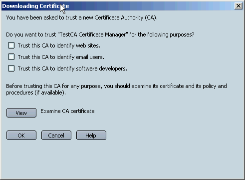
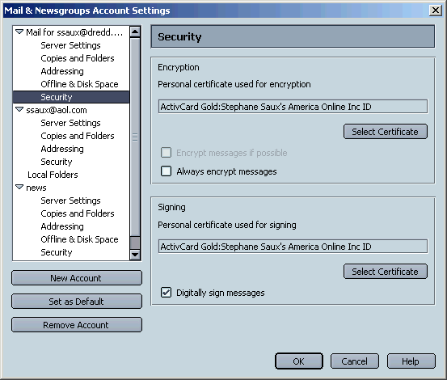
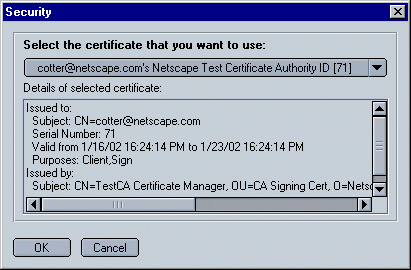
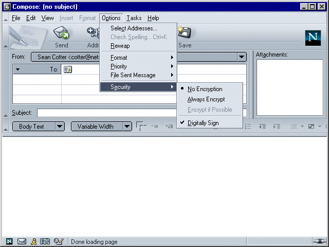
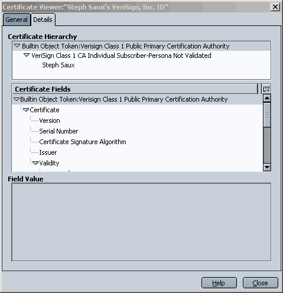
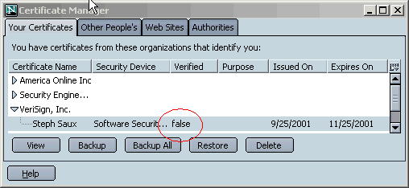
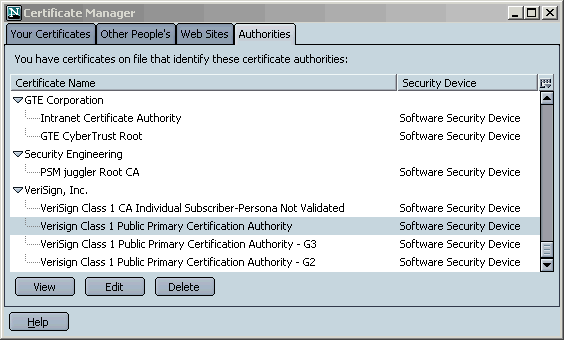
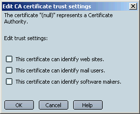
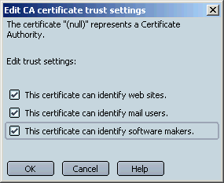
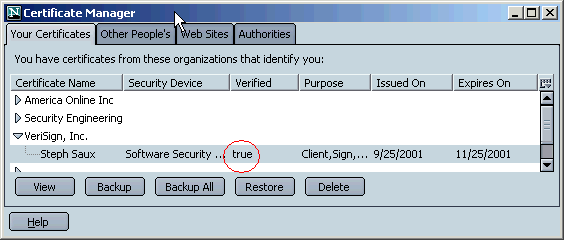

S/MIME 利用ガイド
ニュースグループ： netscape.public.mozilla.cryptoテクニカルコンタクト： Javier Delgadillo and Terry Hayes
管理者： Stephane Saux
目次
はじめに
はじめよう
メールに署名し暗号化する
メール受信者の暗号証明書を取得する
何をテストするのか
参考資料 A ：証明書を表示する
参考資料 B ：トラブルシューティング
はじめに
Mozilla のナイトリービルドには、基本的な S/MIME 機能が含まれています。UI 計画については、暗号および署名 UI 仕様を参照してください。この資料では、現在の Mozilla ビルドに含まれる S/MIME の使い方やテスト方法について解説します。
現在の Mozilla ビルドでは次のような操作ができます：
- 電子メールアカウント単位での S/MIME 設定
- 一時的で最小限の UI での S/MIME メッセージの受信および表示
- 最小限の UI コントロールを用いた S/MIME メッセージの送信
完全な S/MIME UI は実装し始めたばかりですので、S/MIME に関して現在行われているテストに Mozilla コミュニティの皆さんの参加をお願いします。ここから先の資料では、以下の事項について取り上げます：
- ブラウザが S/MIME を利用できるように設定する
- メールに署名し暗号化する
- 現在の機能をテストする
- 証明書関連の UI を利用する
- トラブルシューティング
はじめよう
Netscape は、特に Mozilla ナイトリービルドで S/MIME のテストを行う目的のために、公開の Test Certificate Authority（テスト認証局：CA）を設立しました。この CA は、十日後に期限が切れるテスト証明書を発行します。このセクションでは、CA から複合鍵テスト証明書を取得する方法、署名・暗号化した電子メールメッセージを送れるように Mail & Newsgroup を設定する方法について解説します。
CA 証明書をダウンロードして S/MIME を設定する
S/MIME をテストするためにブラウザを設定し、Netscape のテスト CA から適切な証明書を取得するには、次のステップに従ってください：
- http://ftp.mozilla.org/pub/mozilla/nightly から 2001年 1月 11日以降のナイトリービルドをダウンロードしてください。S/MIME 機能は、追って通知があるまでアルファ版としてみなされます。
- 新しいプロファイルを作成し、Mail & News Account Manager を使って機能をテストするためのメールアカウントを作成してください。これは必ずしも必要ではありません（既存のプロファイルを使うこともできます）。ただし、遭遇する可能性のある問題を再現するのに役立ちます。さらに、S/MIME のテストには証明書のインポートが伴うため、もし証明書データベースに問題があった場合、新しく別個のプロファイルを作成しておくことで、既存のプロファイルを保護することもできます。
- 次のリンクをクリックして Netscape テスト CA ルート証明書を新しいプロファイルにインストールしてください： 今すぐ Netscape テスト CA ルート証明書をダウンロードする 次のようなダイアログが表示されます：
- Netscape Test Certificate Authority サイトに行き、指示に従って個人用複合鍵証明書を取得してください。

少なくとも最初の二つのチェックボックスは選択してください。これらのチェックボックスを有効にすることで、この CA 証明書を信頼し Web サイトやメールユーザを特定するために使用するできるようになります。これで警告を受けることなく Netscape テスト CA のための SSL サーバにアクセスすることができるようになります。より大切な点として、これらのチェックボックスを有効にすることで、Netscape テスト CA から発行された証明書を持つ他の人からの署名メールをも検証することができるようになります。
Netscape テスト認証局は、複合鍵証明書を発行します。つまり、あなたは二つの証明書を取得するのです：一方の証明書は他の人によってあなた宛に送られるメールを暗号化するために使われます。もう一つの証明書はあなたが使用するもので、メールに署名したり、クライアント認証を必要とするサーバに対してあなたの身元を証明するために使われます。
署名と暗号をサポートする単一の証明書取得することも可能であることを覚えておいてください。例えば、Verisign が発行する無料のトライアルメール証明書は、署名と暗号化の両方をサポートしています。ただし、S/MIME を完全にテストするには、複合鍵証明書を用いなくてはなりません。
Netscape テスト認証局から証明書が取得できない場合、testca-admin@netscape.com にメールを送ってください。
証明書のバックアップを取ってください。さらにテスト証明書もバックアップを取ってください。バックアップを取るには、証明書マネージャを開き、両方の証明書を選択し、［Backup］をクリックします。これは非常に大切です。証明書データベースに何か問題が起こったりした場合、証明書のバックアップコピーで修復しない限り暗号化されたメールにアクセスができなくなります。
証明書とテストクライアント認証の検証
テスト証明書を取得したら、証明書マネージャを使って証明書を見てください。次のステップに従ってください：
- ［Edit］メニューを開き［Preferences］を選択します。
- ［Privacy & Security］カテゴリ内で、［Certificates］を選択します。（サブカテゴリが開いていない場合、カテゴリをダブルクリックしてリストを展開してください。）
- ［Manage Certificates］セクション内で、［Manage Certificates］をクリックします。
証明書の利用に際してさらに多くの情報を得るためには、［Help］メニューを開き、［Help and Support Center］を選択します。そして左パネルにある［Using Certificates］をダブルクリックしてください。現時点では S/MIME ヘルプは含まれていませんが、証明書管理についての一般的な情報を得ることができます。
証明書マネージャの［Your Certificates］タブ内で、証明書の「Verified」コラムに「true」という値が入っていなければなりません。そうでないとその証明書を使うことができません。複合鍵証明書の値が「true」となっていない場合、この資料のトラブルシューティングセクションを参照してください。
クライアント認証のために署名用証明をテストするには、次のリンクをクリックしてテストサーバにログインしてください：クライアント認証テストサーバ
クライアント認証のプロセスでは通常、ユーザに対して情報を開示します。証明書要求ダイアログを見るには、証明の前に次のステップに従ってください：
- ［Edit］メニューを開き、［Preferences］を選択します。
- ［Privacy & Security］カテゴリ内で、［Certificates］をクリックします。（サブカテゴリが開いていない場合、カテゴリをダブルクリックしてリストを展開してください。）
- ［Client Certificate Selection］内で［Ask Every Time］をクリックします。
同じセッション内で既にテストサーバから認証されている場合は、ブラウザを終了して再起動し、再び（上記の）ページを訪れてください。
S/MIME 用にメールアカウントを設定する
署名あるいは暗号化されたメールを送るには、まず初めにメールアカウントを S/MIME 用に設定する必要があります。次のステップに従ってください：
- ［Tasks］メニューを開き、［Mail & Newsgroups］を開きます。（まだメールアカウントをテストプロファイル用に設定していない場合は、次に進む前に設定するように促されます。）
- ［Edit］メニューを開き、［Mail & Newsgroups Account Settings］を選択します。
- 左パネルの中で、設定したいアカウントを選択して、そのアカウント内の［Security］をクリックします。
- ［Digital Signing］では、電子メールメッセージに署名をする際に使用する証明書を選択することができます。選択した証明書は、（暗号化されたすべてのメッセージも含め）署名するすべてのメッセージに添付され、受信者があなたのデジタル署名を検証することができるようになります。署名はこの証明書のための秘密鍵を使って作成されます。秘密鍵はあなたのハードディスクにそのまま残ります。
- ［Encryption］セクションでは、電子メールメッセージを暗号化する際に使用する証明書を選択することができます。この証明書は、あなたが送信するすべての署名および／または暗号化されたメッセージに添付されます。これにより、すべての受信者がその証明書を利用して、後にあなた宛に送るメールを暗号化することができるようになります。復号化は、この証明書のための秘密鍵を用いて行われます。その秘密鍵はあなたのハードディスクにあります。
- ［Digital Signing］セクションでは、［Select］をクリックします。
- テストに使用したい署名用証明書を選択して、［OK］をクリックします。
- ［Digital Signing］セクションでは、［Digitally sign messages］となっているチェックボックスを選択します。
- ［Encryption］では、［Select］をクリックします。同じようなダイアログボックスを利用して、暗号化に使用したい証明書を選択します。（証明書が署名と暗号化の両方をサポートしている場合、署名用に選択した証明書は暗号化用に使用する証明書と同じ場合があります。）ここでは［Never］となっているラジオボタンを有効にしたままにしておきます。これでも個々のメール単位でメッセージを暗号化することができます。
- ［OK］をクリックします。
［Security］パネルには二つのセクションがあります：［Digital Signing］と［Encryption］です：

このダイアログボックスが表示されます：

署名メッセージを送信する前に、署名用証明書と暗号化用証明書を選択しておかなければなりません。メッセージに署名するとき、そのメッセージには署名用証明書と暗号化用証明書の両方が添付されます。これは受信者があなたからのデジタル署名を検証し、必要に応じてあなたに対して暗号化されたメールを送ることができるようにするためです。
これで署名および暗号化したメッセージを送ることができるようになりました。
メールに署名し暗号化する
電子メールメッセージにデジタル署名するには、次のステップに従ってください：
- ［Compose］（または既存のメッセージへの返信、転送）ボタンをクリックしてください。
メール作成用の新しいウィンドウが開きます。
- ［Options］メニューを開き、［Security］サブメニューを開いてください。
- テストメッセージにアドレスや本文を加え、［Send］をクリックします。

厳密にこの資料の手順に従うと、［Digitally Sign］がすでに選択されていることに気づくでしょう。これは先に選択した［Mail & Newsgroup Account］オプションによるものです。
メッセージにデジタル署名だけを加えて暗号化はしない場合、このメニューで特にすることはありません（Digitally Sign アイテムが既に選択されていることが前提です）。署名とともにメッセージを暗号化したい場合は、［Always Encrypt］を選択してください。（現在のビルドでは、Always Encrypt はそのとき開いているメール作成ウィンドウのみに対してしか有効になりません。）
メッセージを受け取ったとき、（現在のビルドでは）ヘッダー部分の右側に、署名されているか、あるいは署名され暗号化されているかどうかが示されます。（暗号化されたメッセージは常に署名がされています。）
上記のとおりに S/MIME が設定されている場合、あらゆるメールメッセージにデジタル署名をすることができます。ただし、メッセージを暗号化するには、各受信者の暗号証明書を既に持っていることが必要になります。次のセクションでは、受信者の証明書の取得方法について解説します。
メール受信者の暗号証明書を取得する
ある受信者に対して暗号化したメールを送る前に必要となる暗号証明書を取得するにあたって、現在の S/MIME 実装では二つの方法があります。
- 受信者から署名または暗号化されたメールを送ってもらう。これは Netscape Communicator や現在の Mozilla ビルドで可能です。Mozilla コミュニティの多くは、受信者から証明書を取得するためにこの方法を使います。
- 組織によっては LDAP ディレクトリを提供しており、ここからリンクをクリックすることでユーザの証明書を取得することができます。
人の証明書を取得するかどうか決めるには、先に解説された方法で証明書マネージャを開き、［Other People's］タブをクリックしてください。
何をテストするのか
テストに関していくつかの例を挙げると：
Some suggestions for testing:
- 新しい機能につきものの潜在的なリグレッションを探すために非 S/MIME Mail & Newsgroup 機能をテストする。対応するトランクビルドで、どのリグレッションも再現されないことを確認してください。
- 通常のメッセージ表示ができるか
- 通常のメッセージを送信できるか
- メッセンジャーやメール作成ウィンドウ、返信、転送のパフォーマンスはどうか
- S/MIME と通常のメッセージの両方を格納しているフォルダーへの影響はどうか（ソート、圧縮、選択、保存など）
- フォルダの検索はどうか
- S/MIME 機能をテストするには：
読み込み・送信テストを行うために、次のようなケースを考えてください：
- 自分宛に送った電子メール
- 他の人から送られてきたメール
- 複数の受信者宛に送られたメール
- 添付ファイルのあるメール
- 返信や転送がされているメール
- 上のケースの組み合わせ
- 異なるメールクライアントからの送信や読み込み
- S/MIME 機能をテストするには：
- 署名メールを送る。受信者はその署名メールを読むことができ、上の設定従った場合の署名が妥当なものになるかどうか。
- 暗号化されたメールを送信する
- 署名され暗号化されたメールを送る
- 署名されたメールを読む
- 暗号化されたメールを読む
- 署名され暗号化されたメールを読む
- 署名されたメールを受け取って読み、送信者の証明書を表示し、送信者への返信を暗号化することができるか。
- 暗号化されたメールを受け取って読み、［Always Encrypt］オプションを選択してから、［Reply All］ですべての受信者に対して暗号化したメールを送ることができるか。
参考資料 A ：証明書を表示する
証明書マネージャを開いて基本的な管理タスクを行うには、次のステップに従ってください：
- ［Edit］メニューを開き［Preferences］を選択し、［Privacy & Security］をダブルクリックして、［Certificates］をクリックしてします。そして［Manage Certificates］をクリックします。
- ［Your Certificates］タブにあなたの S/MIME 証明書が表示されるはずです。［Verified］コラムは証明書に対して「true」になっていなければなりません。「true」になっていない場合は、トラブルシューティングセクションを参照してください。
- ［Other People's］タブには、他の人からの証明書が表示されます（署名されたメールが送られてくると自動的にインポートします）。［Verified］コラムも、表示されている証明書に対して「true」になっていなければなりません。
- ［Authorities］タブでは CA 証明書を表示し、それら証明書の信頼設定を変更することができます。
- 証明書を表示するには、証明書の名前をダブルクリックします。
- CA 証明書の信頼属性を編集するには、［Authorities］タブをクリックし、該当の証明書を選択します。そして［Edit］をクリックします。S/MIME テストのためには、S/MIME のために利用する証明書のルート CA が、少なくとも電子メール証明書のために信頼されていなければなりません。
証明書ビューアの［Details］タブには、証明書チェーンの証明書階層が表示されます。これは、ルート CA 証明書を突き止めて、その信頼属性を編集したい場合に便利です。

証明書の利用に関してより詳しい視点から解説された情報を得るには、ダイアログボックス内の［Help］ボタンをクリックするか、［Help］メニューを開いて［Support Center］を選び、左側のフレームに表示される［Using Certificates］をダブルクリックしてください。現在のビルドには S/MIME ヘルプが含まれていませんが、証明書管理についての一般的な情報を得ることができます。
参考資料 B ：トラブルシューティング
署名・暗号化されたメッセージの表示または送信がうまくいかない場合、問題となっている S/MIME 操作のために利用されている証明書が「Verified（検証）」されていないからかもしれません。つまり、証明書が信頼されたルートにつながっていないのです。これは PSM のバグが原因で、証明書をインポートする際に、ルート CA 証明書の信頼設定が失われてしまうことがあるのです（101616, 100386）。これは S/MIME のバグではなく、現在作業が進められていますが、修正されるまで迂回操作が必要です。
フリートライアル用の Versign 証明書が検証されていない場合、Certificate Manager（証明書マネージャ） ウィンドウは下のように見えるはずです：

この場合は、［Authorities］をクリックして、Verisign パーソナル電子メール証明書のためのルート CA 証明書を突き止めてください：

ルート証明書を選択して［Edit］をクリックすると、下のような画面が出ます：

どの信頼オプションも選択されていないため、ブラウザがこの証明書を信頼しないのです。これは PSM のバグによるものです。この CA 証明書は通常、ビルトインされておりブラウザによって信頼されています。この問題を修正するには、三つすべてのチェックボックスを選択してください。下の図のようになります。そして［OK］をクリックします。

［Your Certificates］タブに戻ると、下の図のようになっているはずです：

一回この作業をすれば、あなたの証明書は信頼され、電子メールに署名することができます。他の人の Verisign 証明書も同様に信頼されるので、暗号化したメールを送ることができるようになります。